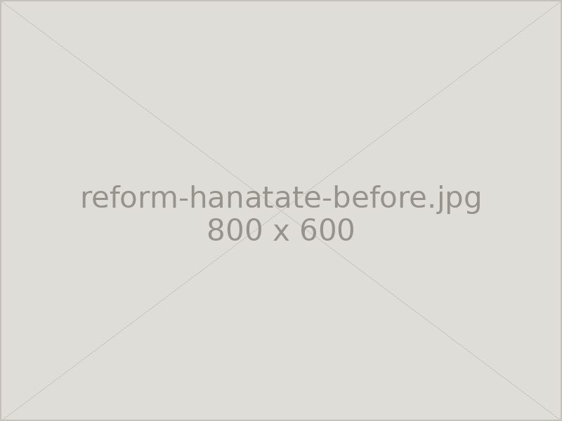
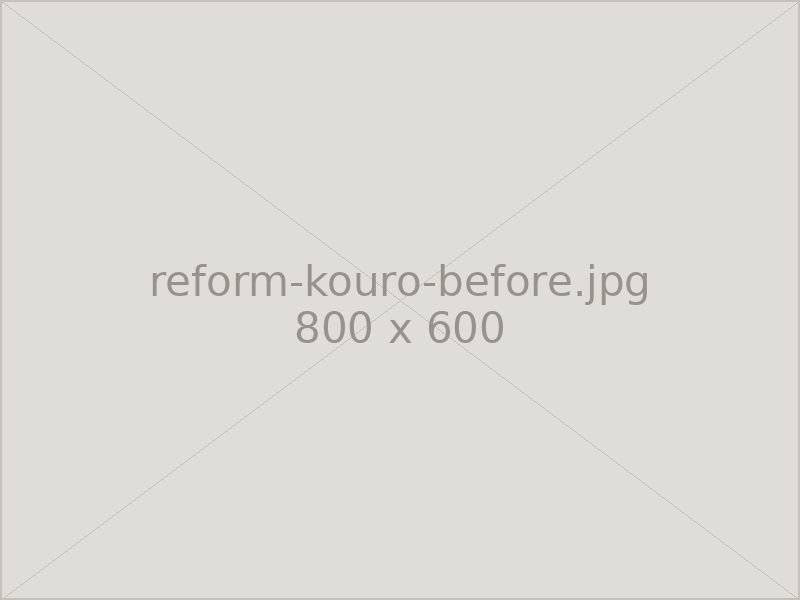
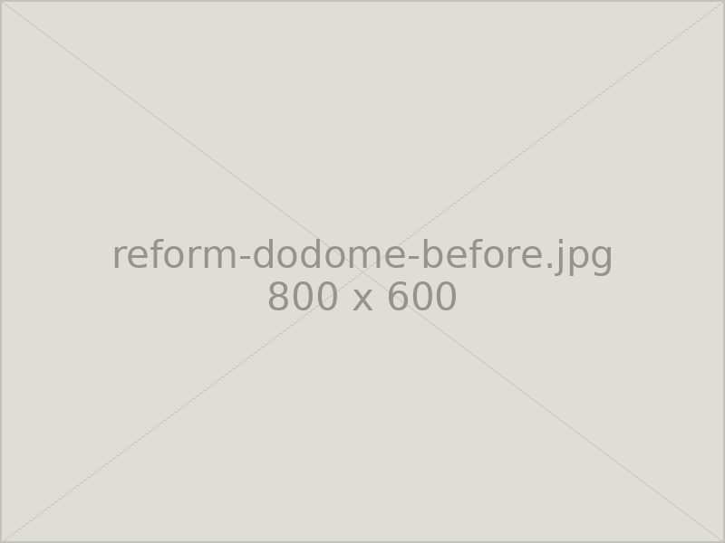
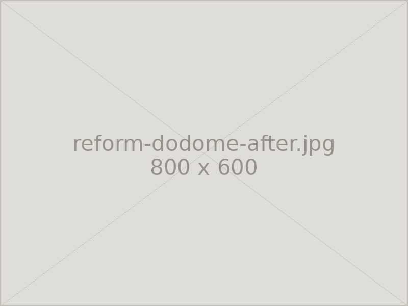

Reform
リフォーム
老朽化したお墓を修繕し美しさを取り戻します。建て替えなくても、傷んだ部分だけを直すことで見違えるほどきれいになります。
こんなときにご相談ください
お墓は建ててから何十年と使い続けるものですから、部分的な傷みは避けられません。全体を建て替えなくても、傷んだ箇所を交換・修繕することで長く使い続けられます。
- 花立の中の金具が錆びて、水が漏れる／抜けなくなった
- 香炉が欠けている、線香が風で消えてしまう
- 土留や外柵が傾いている、隙間が空いてきた
- 目地が切れて、雨水が石のあいだに入り込んでいる
- お墓全体が傾いている、沈んでいる
花立金具の交換
花立の中に入っているステンレス製の中筒は、長年の使用で錆びついたり、変形して抜けなくなったりします。新しい金具に交換することで、お花の水替えがしやすくなり、石の内部に水が溜まって割れる原因を防ぎます。

香炉の交換
欠けたり割れたりした香炉を新しいものに交換します。風で線香の火が消えてしまう場合は、屋根つきの型や、線香を寝かせて置ける型への変更もご提案できます。お墓全体の石の色に合わせてお選びいたします。

土留の交換
区画の土を留めている土留（外柵の下の部分）が傾いたり、隙間が空いたりすると、そこから土が流れ出し、お墓全体の沈下につながります。古い土留を撤去し、新しい石材に入れ替えて据え直します。あわせて地盤を締め固めますので、施工後の安定性も高まります。


※ 写真は施工例の一部です。実際の仕上がりは、お墓の形状や石の種類によって異なります。
Contact
お気軽にご相談ください
お見積り・ご相談は無料です。まずはお電話でお聞かせください。
営業時間 8:00〜17:00 ／ 定休日 毎月14・15日、土日
FAX 03-3333-8452